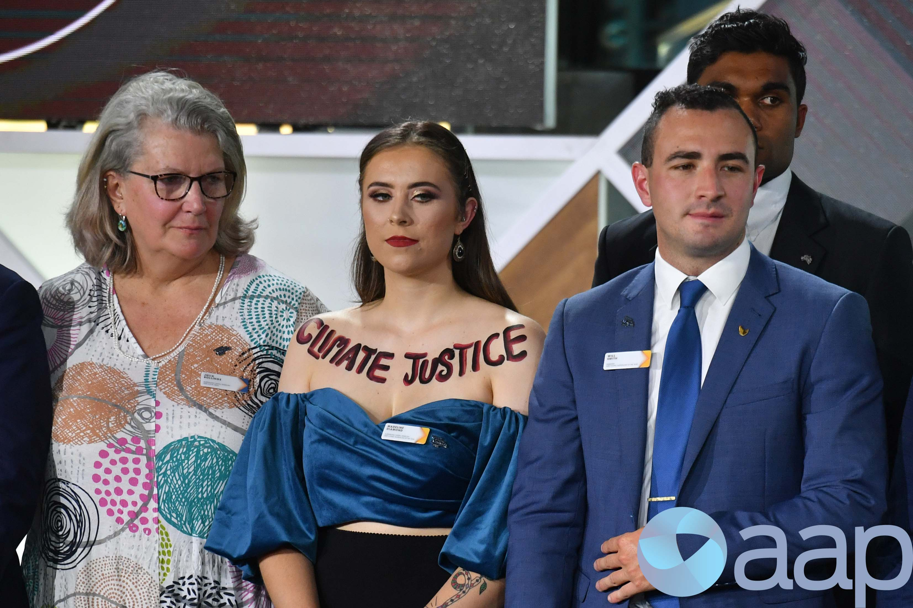

First, let me apologize for missing last week’s installment. I ran into some unanticipated travel and computer problems that kept me from finishing on time. Plus, I’ve wandered into some deep topics that took me a bit longer to craft into words.
Since the last installment , I’ve been contemplating my personal biases and how I have dealt with them, hopefully, to learn and to teach. In particular, I’ve been considering the semantic difference between prejudice and judgment—both words have the same essential root; the difference is in timing. Prejudice is jumping to a conclusion before gathering information, and judgment (both good and poor) is forming an opinion after information has been collected. In modern society, prejudice is considered harmful, while judgment (particularly if rendered by experts) is considered helpful. But to objectively evaluate prejudice vs. good judgment, we must understand any opinion’s context (i.e., when and on what basis?).
To put these thoughts in more concrete terms, let’s start with a contemporary distinction that has acquired political overtones.
The term “woke” has been coined to signify a lack of personal bias, so I thought I’d see if I qualify. Webster’s Dictionary added the word in 2017 as being “aware of and actively attentive to important facts and issues (especially issues of racial and social justice).” I’m aware of and pay attention to detail, but what does it mean to be actively attentive? Which ones are the important facts and issues? And while I indeed embrace justice as a virtue, do I emphasize racial and social issues enough ? I need more context!
While digging deeper, I came across an article from Down Under , titled “ It’s time we got woke to the word ‘woke’”, which led me to the following visual description of “woke” as it relates to the social issue of climate change:

That’s not Photoshopped. This young “Sustainability Advocate,” Madeline Diamond , wore her climate wokeness painted prominently on her chest while being presented with a national award. If that’s “woke,” then I’m not and never will be. But there are enough vague modifiers in Webster’s that there must surely be a spectrum of “wokeness”. So, if you’ll allow me to grade myself, and Madeline is an A-plus, then I’m a B or B-minus—a passing mark, above average, but not at the head of the class, even in a subject like “climate” that I am genuinely passionate about. [Frankly, ‘woke’ is not a very scientific term. To my ear, it sounds an awful lot like a religious test , or at the very least, a way of determining purity or asserting moral superiority.]
Now, I’d like you to consider my late brother, Bill. He was my oldest sibling; we were separated by 22 years. He passed peacefully on February 2, 2020, just as the COVID pandemic picked up steam, but before the electoral outcome led to the January 6 “insurrection”. Apropos of this installment, he was a stereotype, a retired Floridian living on a golf course, devoted to the Tea Party, then to our 45th President. The TV was tuned to FOX News for background entertainment when I visited. At his funeral, his ashes were accompanied by a distinctive red hat. To me, however, he was my big brother, with all the complex emotions that such a relationship entails.
If I told you that our viewpoints differed, that would be an understatement, but this difference defined and sharpened our relationship for over a decade. After Bill retired from a long and successful career in public relations and discovered e-mail, we began a long correspondence primarily about politics. As a direct result, we became closer than we’d ever been in real life, even as he alienated other family members who found his views objectionable.
Rather than try to summarize a decade of personal e-mails, I thought I’d reprint one of his many “Letters to the Editor”. Specifically, he wrote this one a year before his death:
Letters to the Editor: April 2, 2019, Treasure Coast Newspapers:
What the Democrats’ media allies are doing to President Trump and his supporters is fast becoming one of the more disgraceful chapters in U.S. journalism history.
I say this as an old J-school grad and one-time newsman who's truly disgusted with how these self-indulgent pseudo-journalists are using their power and privilege to help Democrats cripple a sitting president simply because he embarrassed them at the ballot box.
They're just like all the other progressive poor-losers who've vowed to make Trump pay for having the audacity to rain on their parade.
Their basic strategy: 1) mock and demonize Trump and his administration at every turn; 2) exploit, hype and spin anything that can be used to discredit him, his family and supporters; 3) lionize anyone trashing him, the GOP or Fox News; and 4) minimize or totally ignore anything that diminishes his enemies.
Among their many successes: being able to keep the nation fixated on every twist and turn of the Mueller investigation while covering up one of the biggest U.S. political scandals ever — how Obama's FBI, DOJ and the Clinton campaign conspired to protect Hillary Clinton from prosecution and then undermine the Trump presidency.
The anti-Trump mindset dominates not only most of today's mainstream media but the rest of the industry as well.
The media's entire left wing has essentially abandoned the industry's time-honored principles of objectivity, fairness and honesty. "Never Trump" are the new watchwords. And it's destroying what little credibility the once respectable profession has left.
It's also a stark reminder that America's biggest threat is not Russia, China or global warming, but the enemy within.
William Burbaum, Port St. Lucie
Setting aside the irony and anachronism of using a newspaper to criticize modern media, this letter clearly expresses his perspective. As a one-time journalism major, Brother Bill wrote for a living, so I expected nothing less. It gives you the flavor of our e-mails!
Was Bill “biased”? You bet! He would’ve given himself a lower “wokeness” grade than I did, and proudly so! Did I try to correct his misconceptions? From time to time, I tried, but my efforts had predictable results. But I didn’t approach our correspondence as an opportunity to score points, change his mind, or prove myself “smarter”. Instead, I took it as an opportunity to learn from someone who shared genetics and many environmental factors but whose point of view was formed in an earlier generation.
Ideally, you’ve read his letter by now, so let me ask you to do an exercise. Re-read it, except create in your mind the mirror image—substitute right for left, Biden for Trump, etc. If you find yourself nodding your head to either version, that’s your “confirmation bias” at work. Indeed, either end of the political spectrum is predisposed to criticize the messenger and dismiss contrary viewpoints as ridiculous—the ad hominem and innuendo tropes, again. While I believe these “mirror images” are far from equivalent, I can’t be entirely sure if that’s the truth or my own confirmation bias at work.
Now, look for the nuggets that are present in both versions, like “objectivity”, “credibility”, and “America’s biggest threat”. This semantic overlap is where the common ground lies. Bill and I disagreed on most hard facts—there are, as Kellyanne Conway famously stated, “alternative facts” if we allow our values to influence our objectivity. Still, Bill and I agreed that parts of the media can be narrow, dishonest, and self-serving and that our Republic is seriously threatened by partisan polarization. It was a starting point for finding common ground, at least.
Perhaps you’ve concluded that every citizen should earnestly contemplate all sides to every issue and actively engage with those whose opinions differ. Instead, I ask, “Is that the best use of time?” With modern technology, all the knowledge in the world is at our fingertips, and every human can connect instantly with anyone anywhere in the world. Such informed enlightenment is more feasible now than ever. Indeed, the pundit-expert class would cheer us on if we followed them into the higher echelons of knowledge. Sadly, all the information technology in the world hasn’t increased the amount of time we are allotted. In my experience, modern life is so fragmented that most of us barely have time to think, and it is far too convenient to delegate that vital task to others. So, we “like”, we “forward”, and we “follow”. Until recently, many of us “retweeted” as well 1 . It’s a dangerous trend that both Brother Bill and I succumbed to from time to time.
Let me suggest another approach. Instead of criticizing “bias”, let’s embrace it! It’s human nature, a character defect we all share whether we want it or not. It ought to be a topic for humor rather than ridicule. [For example, take the ethnic humor embedded in Norman Lear’s classic sitcom, “All in the Family”. Archie’s bigotry elevated rather than diminished his targets—and it was hilarious!] I’m not suggesting we take our biased cliques to the streets, white supremacist- or insurrectionist-style. I’m just saying that a better choice would be to embrace the inevitability of diverse views, particularly those we find puzzling or even disgusting, and to recognize their fallibility in isolation and their strength together. Once we’ve all agreed on specific shared ‘universal’ values, like “Equal justice under Law” and the wisdom of choosing self-government democratically, we should allow others to act and think for themselves. And we should expect the same courtesy from them—that’s the operational version of freedom [ cf. The First Amendment]. The saving virtue of our Republic may be that, in our system, individual misguided biases cancel one another out. Thus, we benefit from the crowd’s collective wisdom while avoiding its madness. This mechanism leads us unwittingly but inexorably toward a more perfect union.
As I reach the end of this installment, it has occurred to me that I’m asking you to “trust the process”, which is more of a religious or spiritual theme than I’d intended. So perhaps “Trust but verify” would be a better coda.
As a postscript, let me share a brief excerpt from Jon Meacham’s recent biography of Lincoln, “ And There Was Light: Abraham Lincoln and the American Struggle ”:
In the winter of 1842, just after his thirty-third birthday, Lincoln shared some of the fruits of his study. In the Second Presbyterian Church of Springfield to address a temperance society meeting on Washington’s birthday, he offered a profound vision of human nature, arguing that previous generations of religiously driven temperance advocates had pursued their cause in the wrong way. “When the dram-seller and drinker, were incessantly told,” Lincoln said, “not in the accents of entreaty and persuasion, diffidently addressed by erring man to an erring brother; but in the thundering tones of anathema and denunciation…I say, when they were told all this, and in this way, it is not wonderful that they were slow, very slow, to acknowledge the truth of such denunciations, and to join the ranks of their denouncers, in a hue and cry against themselves.”
To be hectored and condemned; to be told that they were wholly wrong; to be told that preachers were in full possession of the truth: Lincoln believed that was a path not to reform but to intransigence. Self-righteousness and certitude were the enemies of conciliation and conversion. “When the conduct of men is designed to be influenced, persuasion , kind, unassuming persuasion, should ever be adopted,” Lincoln said. “It is an old and a true maxim, that a ‘drop of honey catches more flies than a gallon of gall.’ So with men.” He continued: “If you would win a man to your cause, first convince him that you are his sincere friend. Therein is a drop of honey that catches his heart, which, say what he will, is the great high road to his reason, and which, when once gained, you will find but little trouble in convincing his judgment of the justice of your cause….On the contrary, assume to dictate to his judgment, or to command his action, or to mark him as one to be shunned and despised, and he will retreat within himself, close all the avenues to his head and his heart; and tho’ your cause be naked truth itself, transformed to the heaviest lance, harder than steel, and sharper than steel can be made, and tho’ you throw it with more than Herculean force and precision, you shall no more be able to pierce him, than to penetrate the hard shell of a tortoise with a rye straw .
Such is man, and so must he be understood by those who would lead him….Happy day, when, all appetites controlled, all passions subdued….Hail fall of Fury! Reign of Reason, all hail!”
The bold emphasis is mine.
Climate experts and preachers of wokeness alike would be well-advised to read Meacham and heed Lincoln.
Thank you for reading Healing the Earth with Technology. This post is public so feel free to share it.
I have willfully become a Twitter zombie by deleting the app from my phone and turning off all notifications on the website—highly recommended!! I can still follow links, read tweets idly, and my account remains active, but I don’t spend more than a few minutes a week there. Consequently, my advertising value is rapidly approaching zero. Mastodon is less demented and has more substance; you can follow me there @burbaum@sfba.social. If you do, please say “hi”.